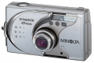
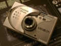

器材库 > 不可换镜头数码相机 > DiMAGE G400

规格总览
发布日期
2003-10-14
停产
是
影像规格
影像传感器
CCD
影像传感器尺寸
1/2.5英寸
总像素
420万
有效像素
400万
静态图像尺寸
2272×1704
静态图像格式
JPEG
画幅比
4:3
镜头和对焦
镜头结构
7片/6组
焦距
5.60mm-16.80mm
等效35mm画幅焦距
34mm-102mm
最大光圈
f/2.80-4.9
数码变焦
2倍
最近对焦距离
5cm
自动对焦系统
Video AF
手动对焦
支持
曝光控制
测光模式
中央重点测光, 点测光
曝光模式
P（程序自动曝光）, A（光圈优先自动曝光）, M（手动测光曝光）
快门速度
15 -1/2000 s
曝光补偿
±2EV以1/3EV级调整
ISO感光度
50, 100, 200, 400, 自动
白平衡
日光, 白炽灯, 自定义, 阴影, 自动, 日光灯
自拍
10秒
连拍
2.5(fps)
闪光灯
内置闪光灯
固定
闪光模式
自动, 慢速同步, 减轻/消除红眼, 填充式闪光
取景规格
取景器
光学取景器
LCD类型
彩色TFT LCD
LCD尺寸
1.5英寸
LCD像素
7.68万
文件输入/输出
内置存储容量
16MB
存储卡
MS/MS PRO记忆棒, SD/SDHC, MMC
数据接口
USB
电源
电池
4.7V NP-600
外观
颜色
银色
尺寸
93.50 x 55.50 x 23.00mm
重量
145g
cnbc2005-07-20 21:114.31 分
操作性 3.50功能性 4.00美观性 5.00趣味性 4.50耐用性 4.00性价比 4.50解像力 4.50色彩还原 4.50

子非鱼2005-06-01 00:004.63 分
操作性 4.50功能性 5.00美观性 4.50趣味性 4.50耐用性 4.50性价比 5.00解像力 4.50色彩还原 4.50
lee_yudong2004-07-14 14:154.56 分
操作性 4.50功能性 5.00美观性 4.50趣味性 4.00耐用性 4.50性价比 5.00解像力 4.50色彩还原 4.50
不惑男2004-06-06 09:464.75 分
操作性 4.50功能性 5.00美观性 4.50趣味性 4.50耐用性 4.50性价比 5.00解像力 5.00色彩还原 5.00
产品图 / 样片
美能达 DiMAGE G400
评测 / 相关文章
该产品暂无存档的评测文章